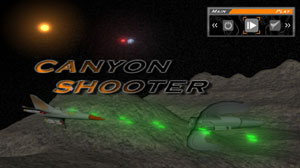
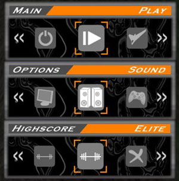
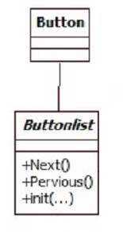
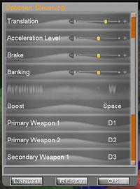
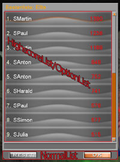
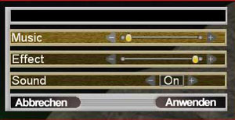
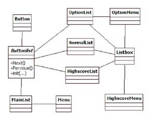
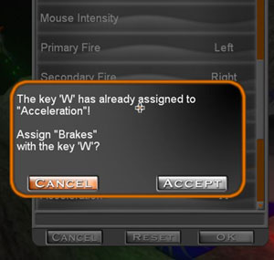
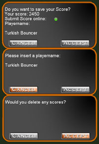

| Computer Graphics TU Braunschweig |
Canyonshooter - 5 User Interface - 5.1 Menü
Teamprojekt Canyonshooter
5.1 Menü
Aufbau des Menüs
|  |
| (a) Hauptmenü |
{kind=link}
Das Menü stellt den wesentlichen Bereich des Spiels dar, der die einzelnen nutzbaren Module des Spiels miteinander verbindet und dem Nutzer die Interaktion mit den Modulen außerhalb der eigentlichen Spielwelt ermöglicht. So bekommt der Nutzer die Möglichkeit, über verschiedene Dialoge Einstellungen zur Steuerung vorzunehmen oder einen Gleiter auszuwählen. Über das Highscoremenü kann er seine bisher erreichten Punkt einzusehen.
Das Menü besteht aus den folgenden Teilen:
Hauptmenü
Nach dem Vorspann gelangt der Benutzer ins Hauptmenü, von wo aus er direkt ins Spiel einsteigen kann oder in die weiteren Untermenüs für Optionen, Highscore und Gleiterwahl wechseln kann.
Optionsmenü
|  |
| (b) Menüs |
{kind=link}
Im Optionsmenü kann der Spieler Änderungen bezüglich
- seiner Identität,
- den graphischen Einstellungen,
- der Steuerung
vornehmen, sodass er das Spiel an seine persönlichen Bedürfnissen anpassen kann. Darüber hinaus gelangt der Benutzer über das Optionsmenü auch in das Menü für Profile.
Highscoremenü
Im Highscoremenü kann der Nutzer seine bisherigen Leistungen und die der anderen Nutzer betrachten. Dabei werden die erbrachten Leistungen in drei Schwierigkeitsstufen eingeteilt und sind in einzeln sortierten Listen einsehbar.
Programmtechnische Struktur des Menüs
|  |
| (c) ButtonList UML Klassendiagramm |
{kind=link}
Der Hauptbestandteil des Menüs sind die Buttons, die durch den Benutzer aktiviert werden und daraufhin die ihnen zugeordnete Aktion ausführen. Die Buttons verweisen auf Untermenüs oder spezielle Interaktionsmenüs, in denen Daten eingesehen oder geändert werden können. Ein Button besitzt im Normalfall zwei Zustände (aktiv/inaktiv), denen jeweils eine Grafik zu Darstellung des Buttons zugeordnet ist.
Zur einfacheren Ansteuerung dieser Buttons mittels Maus oder Keyboard werden die Buttons eines Menüs in einer ButtonList gruppiert. Die ButtonList basiert auf einer LinkedList und verbindet aufeinander folgende Buttons miteinander, sowie rekursiv den Ersten und Letzten der Liste. Diese Liste lässt sich dann horizontal oder vertikal auf den Bildschirm ausgeben.
Das Hauptmenü sowie die beiden Zwischenmenüs, Optionsmenü und Highscoremenü, basieren auf einer Mainlist, einer Spezialisierung der ButtonList mit ähnlichen Grafiken und Strukturen. Genau genommen werden die einzelnen Zwischenmenüs nur in die Liste eingeladen. Die nötigen Daten für das Zwischenmenü und die darin enthaltenden Buttons werden aus einer XML-Datei ausgelesen. Neben dem Hauptmenü und den beiden Zwischenmenüs gibt es weiterhin Menüabschnitte mit Nutzerinteraktion. Diese Abschnitte verwenden weitere spezielle Komponenten, die wieder auf die Spezialisierungen der ButtonList zurückgreifen. So arbeiten sowohl die scrollbare Listbox als auch der statische Dialog in Abstimmung mit ihrer jeweiligen Umgebung mit diesen Spezialisierungen. So kommt unter Optionen eine spezielle ButtonList (OptionList) im Zusammenhang mit der Veränderung der Einstellungen zum Zuge, während für die Anzeige des Highscores eine auf den Highscore abgestimmte HighscoreList zum Einsatz kommt.
Listbox
Die Listbox kommt sowohl im Highscoremenü zum Einsatz um die Leistungen der Nutzer darzustellen, als auch im Optionsmenü, wo sie die Änderung der Steuerung ermöglicht. Die Listbox besteht aus einer Grafik für die Umrandung der Box, sowie zwei ButtonLists zur Interaktion. Die erste ButtonList ist immer eine Spezialisierung, die auf den Einsatzzweck angepasst ist. So kommt unter Optionen die OptionList zum Einsatz, während unter Highscore die HighscoreList genutzt wird. In beiden Fällen werden wieder die nötigen Daten zu Erstellung der Liste aus einer speziellen XML-Datei ausgelesen.
Die zweite ButtonList ist eine Normallist, mit der generelle Buttons, wie Annehmen und Ablehnen, zur Bestätigung und Beendigung der Interaktion und der Rückkehr in die Zwischenmenüs eingebunden werden.
Darüber hinaus verfügt die Listbox über eine Scrollbar, mit der es möglich ist, mit der Maus durch die einzelnen Einträge zu scrollen. Die Scrollbar besteht aus zwei Buttons, jeweils einer am oberen und unterm Ende, zum punktuellen Scrollen. Die aktuelle Scrollposition wird über einen Balken dargestellt, dessen Größe dem Größenverhältnis der gesamten scrollbaren Elemente zu den sichtbaren entspricht.
|  |  |
| (d) Steuerung | (e) Highscore |
{kind=link}
{kind=link}
Dialog
Der Dialog tritt nur im Rahmen der Einstellungen der Grafik, des Sounds und der Spielereinstellungen unter Optionen auf. Er ist im Gegensatz zur Listbox nur statisch und bietet nicht die Möglichkeit die dargestellten Inhalte zu scrollen.
Auch dieser Dialog nutzt eine Spezialisierung der ButtonList als Grundlage. Zum Einsatz kommt auch hier die auf die Optionen abgestimmte OptionList. Im Gegensatz zur Listbox wird beim Dialog nur eine ButtonList genutzt, welche jedoch wieder aus einer speziellen XML-Datei ausgelesen wird. Die Buttons zum Beenden der Interaktion sind hier fest in die Struktur positioniert und werden in keiner ButtonList gruppiert.
|  |  |
| (f) Soundoptionen | (g) UML Klassendiagramm der verschiedenen Listen |
{kind=link}
{kind=link}
Elemente zu Interaktion
Die Buttons sind nicht die einzigen Elemente mit denen der Nutzer im Menü interagiert.
Prompt
Der Prompt ist das äquivalent zur Fehlermeldung unter Windows. Er lässt sich von jedem anderem Objekt aufrufen, zumeist durch Buttons, und zeigt dem Nutzer eine Meldung auf dem Bildschirm. Darüber hinaus bietet er dem Nutzer zwei integrierte Buttons zur Interaktion. Die Buttons können frei in ihrer Funktionsweise belegt werden - am häufigsten jedoch sind Annehmen und Abbrechen.
Somit kommt der Prompt auch in unterschiedlichen Umgebungen zum Einsatz. Zum einen kann er den Nutzer auf ein Problem hinweisen, als auch eine getätigte Eingabe von ihm bestätigen lassen, sowie eine Interaktion, wie das Löschen der Highscore, initiieren und durch Bestätigung des Nutzers ausführen.
Darüber hinaus besitzt der Prompt noch die Möglichkeit eine Eingabe vom Nutzer abzufragen, womit sich auch Eingaben für Namen oder Tastenbelegungen mit dem Prompt nutzerfreundlich realisieren lassen. Der Prompt ist vor allem geeignet um den Nutzer vor unwiderruflichen Eingaben und Interaktionen zu warnen und dessen bewusste Bestätigung zu verlangen.
|  |  |
| (h) Prompt | (i) Prompts |
{kind=link}
{kind=link}
HSlideBar
Bei der HSlideBar handelt es sich fast um einen horizontalen Scrollbar. Die HSlideBar besteht aus zwei Buttons, an jedem Ende einer, und einer Leiste mit einem Marker. Mit den beiden Buttons lässt sich nun die Position des Markers auf der Leiste in die jeweilige Richtung verändern. Auch ein Klick mit der Maus auf die Leiste positioniert den Marker an dieser Stelle.

|
| (j) HSlideBar |
Der Marker gibt dabei immer einen Wert an, der dem Umfeld zugeordnet wird. Dabei stellt das linke Ende der Leiste immer den Minimalwert dar, während das rechte Ende immer den Maximalwert wiedergibt. Die Position des Marker bestimmt nun einen Wert zwischen diesen beiden Werten und gibt diesen weiter. Mit dem HSlideBar lassen sich so einfach Einstellungen wie für die Lautstärke von Musik oder Effekten einfach und nutzerfreundlich einstellen.
Anmerkung
Dieser komplexe Aufbau und die eigene Erstellung der einzelnen Komponenten sind aufgrund des Microsoft XNA Frameworks notwendig gewesen, da dieses Framework keine vorgefertigten GUI Elemente bietet und es mit ihm auch nicht möglich ist, auf bereits vorhandene GUI Elemente aus anderen Frameworks oder API zurückzugreifen.Menüsteuerung
Die Steuerung des Hauptmenüs sowie allen Untermenüs ist per Tastatur und/oder Maus statt. Selbes gilt für die Einstellungsmöglichkeiten in den Optionen. So kann der Benutzer seine persönlich bevorzugte Steuerungsart wählen und nutzen.
Das aktuelle Kapitel
- Inhaltsverzeichnis
- 5 User Interface
TU Braunschweig
- Fakultät für Mathematik und Informatik
- Computer Graphics - Teamprojekt Canyonshooter